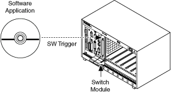

niSwitch Send Software Trigger VI和niSwitch_SendSoftwareTrigger函数允许您通过软件命令前进到扫描列表中的下一个条目。您可以使用此软件命令代替在触发输入端发送触发。一旦稳定，开关仍然可以选择在测量完成时发送触发。再次调用 niSwitch Send Software Trigger VI 或niSwitch_SendSoftwareTrigger函数来执行下一个扫描列表条目。一旦稳定，开关仍然可以选择性地发送数字脉冲触发或测量完成信号。下图表示软件触发扫描应用程序。
|
注意 某些设备可能不支持扫描。有关支持的功能的更多信息，请参阅您的设备手册。 |

 提交有关此主题的反馈。
提交有关此主题的反馈。 访问ni.com/support以获得技术支持。
访问ni.com/support以获得技术支持。